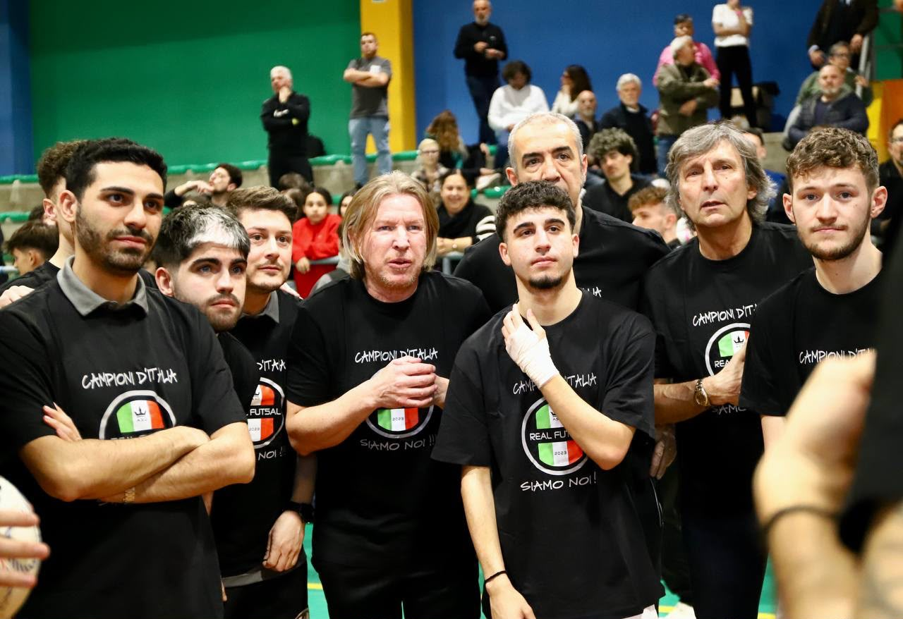
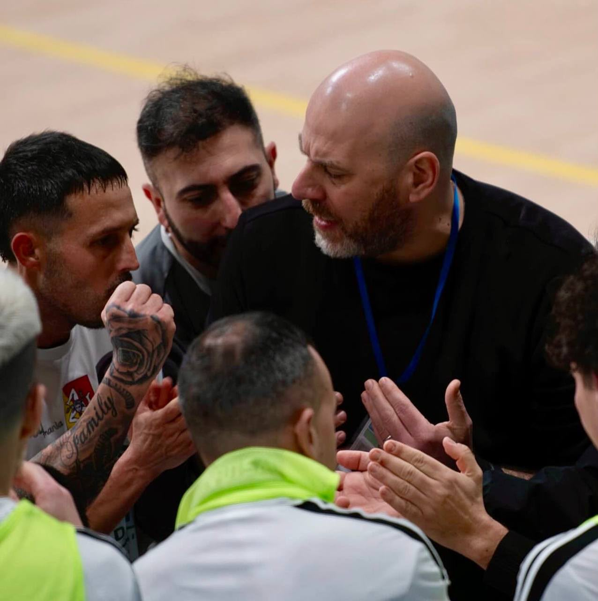
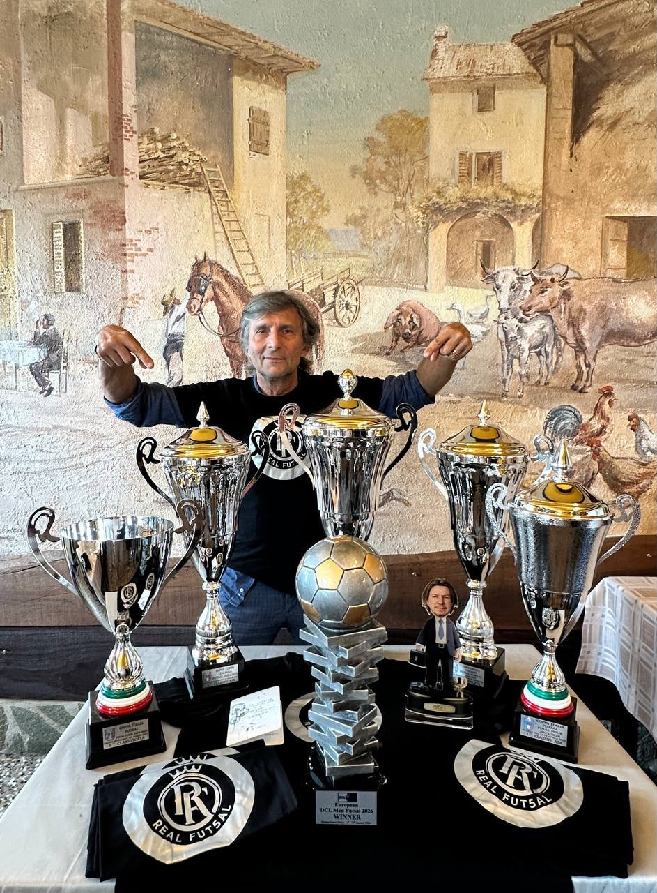

Siamo Tornati: al via la stagione 2026/2027
Parte una nuova stagione. La dirigenza riparte per inseguire il primo Scudetto FSSI, l'unico titolo che ancora manca. «La storia continua».
Scopri il palmarès → •
•
 •
•
 •
•


Aggiornamenti dal mondo Real Fut5al: stagione, competizioni e appuntamenti.
Parte una nuova stagione. La dirigenza riparte per inseguire il primo Scudetto FSSI, l'unico titolo che ancora manca. «La storia continua».
Scopri il palmarès →
La Real Fut5al conquista la prima Champions League DCL della storia del club, diventando un riferimento del futsal silenzioso.
Scopri il palmarès →
Il club alza la Coppa Italia FSSI in due stagioni consecutive, confermandosi ai vertici nazionali.
Tutti i trofei →

Campionato FSSI 2026/2027Mai conquistato in passato: il primo Scudetto FSSI è la grande ambizione della stagione che comincia.
La squadra →
Il club riparte su basi solide, con una dirigenza rinnovata e lo stesso obiettivo: crescere e vincere.
La squadra →
Trofei, celebrazioni, raduni e azioni di gioco: tutte le foto del Real Fut5al in un unico archivio.
Apri la galleria →